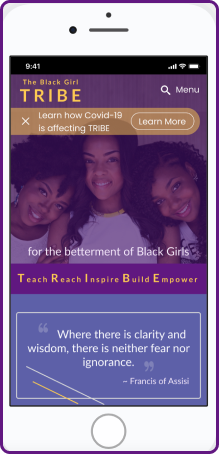
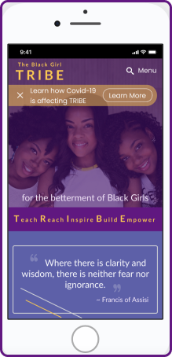
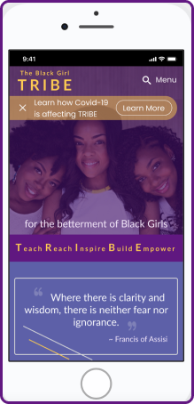
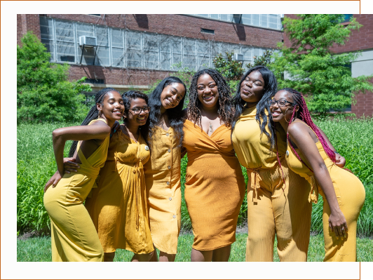

Black Girl TRIBE | Nonprofit Website Redesign
Project Overview
Roles: UX Researcher & UX/UI Designer
Tools: Figma
Timeline: 3 weeks
 

Roles: UX Researcher & UX/UI Designer
Tools: Figma
Timeline: 3 weeks

Black Girl TRIBE, Inc. is a non-profit organization dedicated to the betterment of Black girls. It provides culturally-competent and holistically focused programming centered around advocacy, mentorship, sexual health and sisterhood between Black girls and women of all ages.
The purpose of the TRIBE website redesign was to encourage potential donors to financially support the organization’s purpose, mission and programming. During an heuristics evaluation, we observed that the website in its current state lacks an intuitive user flow ---specifically regarding ways to join and contribute to TRIBE’s causes. Based on our findings, as-is, donors are less likely to discover the full-scope of the organization’s work and make a financial commitment.
To simplify and streamline the navigation process, accentuate contribution methods and highlight the organization’s impact within the community. We anticipated that these changes would help guide and inform users as they navigate the site and assist TRIBE in building robust relationships with the broader community.
How do we best redesign the site to increase awareness of TRIBE’s programming, thereby increasing participation and funding?
Learn how engaged people are with charitable organizations and nonprofits within their community.
Discover users motivations for charitable involvement and the kind of organizations they support.
Gauge how much (monetarily) people are generally comfortable with donating to causes of their choice and what prompts them to do so.
Gather the key decision-making factors that determine where users donate and how much.